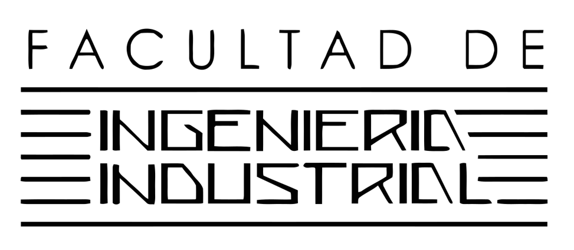

[.Plan Anual de Seguridad y Salud en el trabajo.]
"UNIVERSIDAD NACIONAL MAYOR DE SAN MARCOS"
Plan Anual de SST
Clic para revisar el plan sst
[.Grupo N 5.]

Plan Anual Ambiental
Clic para revisar el plan ambiental